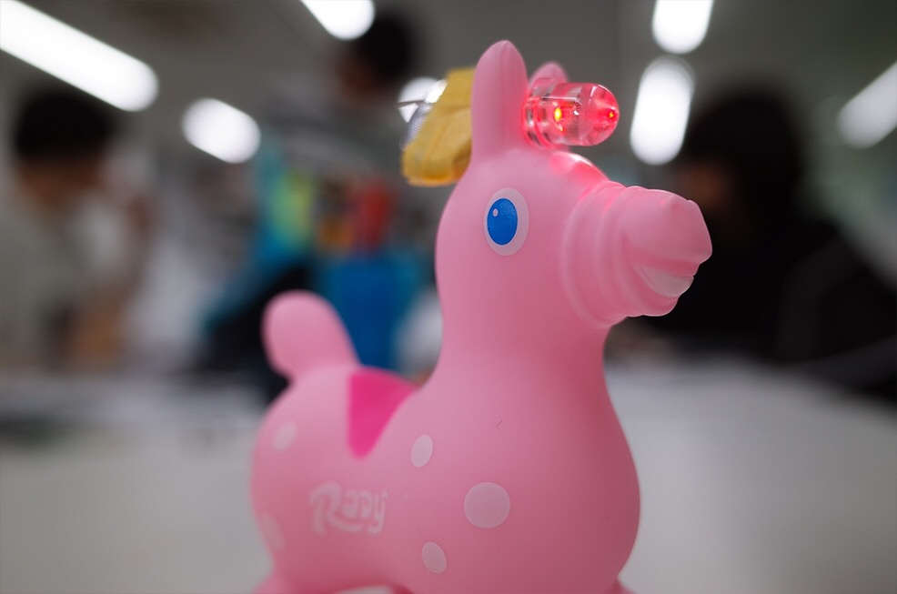
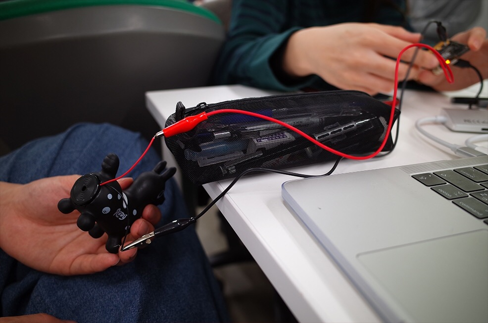
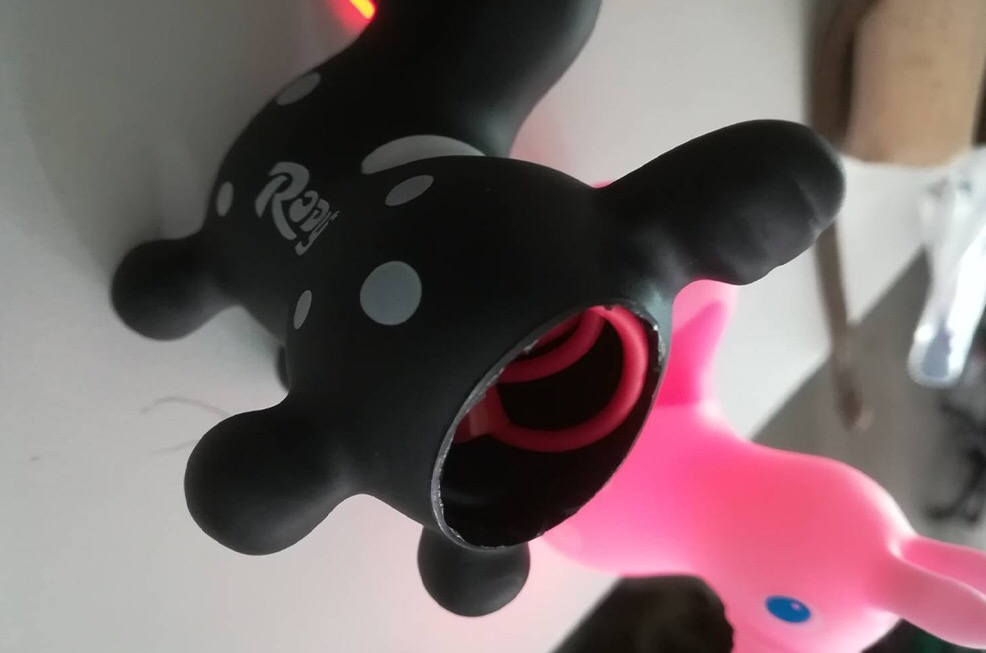
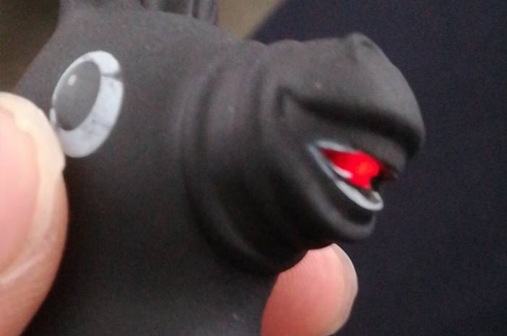
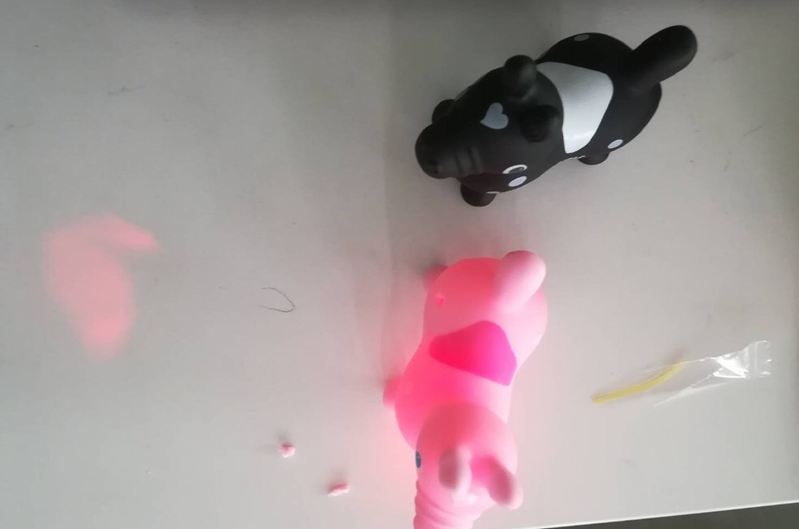
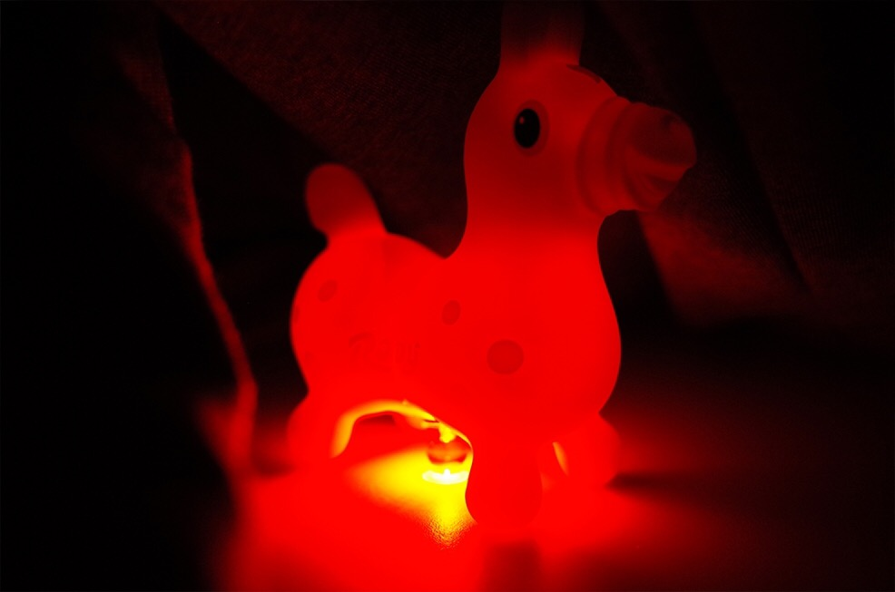

ゆるゆるさーきっと
今回は電子回路についての授業だった。
そして今回の課題が普通は光らないものを光らせるというものでした。
出力はLEDのみであとは授業内で使う端末なら何を使ってもOKという条件でした。
今回は 
この馬の人形とLEDを使いこの馬を間接照明のような感じになるように光らせる事にしました。
黒色の馬とピンク色の馬の２個あったのでそれぞれ紹介します。

写真に写っているのは黒色の馬の人形。黒色の方は口からビームを出しているような感じのものにしたいと思い作っています。
その馬の人形のお尻の方に少し切れ目を入れ、そこに丸電池やコードを入れて光らせる事にした。

丸電池やコードが見えないように全て中に入れなるべく不自然に見えないようにした。

良い感じ！

見えにくいがちゃんと口からビームを出しているような感じになった。
ピンクの方はというと...

ピンクの方は普通に光らせただけになっています。
けれども暗いところで見てみるとかなり光っているように見えました。
黒色の方は遮光率が高いのでこういう風に全体的に光ることはないと思います。
逆にピンクの方だと遮光率が低いのでビームのような局所的に光らせるようなことはできないと思いました。
結果的には割とやりたかったことができたのでよかったですが、'やはりもう少し光の強さが欲しかった'、'切れ目を入れているからやっぱり見栄えが少し悪くなてしまう'など改善点も見えました。
他にも電子回路とは直接は関係なかった遮光性についても何かを光らせるということを考えると必然的に考えなければならないものだなと思いました。